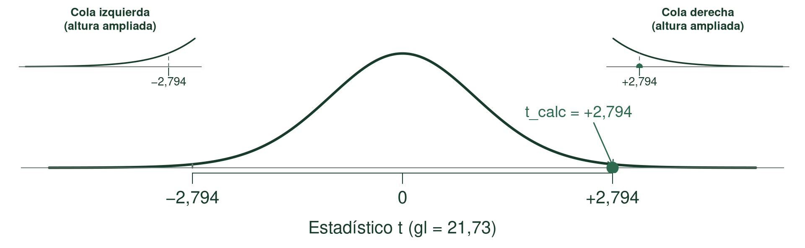
Inferencia estadística
Pruebas de hipótesis
Andrés Tálamo
8 de septiembre de 2026
De estimar a poner a prueba
ESTIMACIÓN · CLASE 05
¿Cuánto vale aproximadamente \(\mu\)?
PRUEBA · CLASE 06
¿Son nuestros datos compatibles con un valor determinado de \(\mu\)?
Seguimos haciendo inferencia sobre parámetros poblacionales.
La pregunta de investigación
En este ejemplo, el rendimiento de referencia de la zona, bajo las prácticas habituales de manejo, es 7,0 t/ha. Es un valor previo al estudio; lo tratamos como fijo: \(\mu_0=7{,}0\) t/ha.
¿El rendimiento promedio de la nueva variedad, en lotes comerciales de esta zona agroecológica y bajo las condiciones de manejo definidas, difiere de 7,0 t/ha?
Nos interesan diferencias hacia arriba o hacia abajo con respecto al valor de referencia.
La pregunta define la población
| Elemento | En este estudio |
|---|---|
| Población de referencia | Población real: conjunto de lotes comerciales con la nueva variedad que cumplen las condiciones de zona, campaña y manejo del estudio |
| Unidad estadística | Un lote comercial |
| Variable | Rendimiento de cada lote, en t/ha |
| Parámetro \(\mu\) | Rendimiento medio de esa población de lotes |
La inferencia queda restringida a esa población: no hablamos de cualquier lote, sino de los lotes de esa zona y bajo esas condiciones, definidas antes del muestreo.
Dos posibilidades
A · COINCIDE O NO DIFIERE
El rendimiento promedio poblacional coincide con el valor de referencia.
B · DIFIERE
El rendimiento promedio poblacional es menor o mayor que el valor de referencia.
Les damos nombre: hipótesis
HIPÓTESIS NULA
\[H_0:\mu=7{,}0\text{ t/ha}\]
HIPÓTESIS ALTERNATIVA
\[H_1:\mu\ne7{,}0\text{ t/ha}\]
Se llama nula porque habitualmente plantea ausencia de diferencia, efecto o asociación respecto del escenario de referencia. Aquí: \(\mu-7=0\), la diferencia respecto de 7 es nula.
\(H_0\) es el escenario de referencia que ponemos a prueba. No buscamos demostrarlo.
Evaluaremos si la información de la muestra es compatible con \(H_0\) o aporta suficiente evidencia en su contra.
Tomamos una muestra
Una muestra aleatoria de 23 lotes, con observaciones independientes.
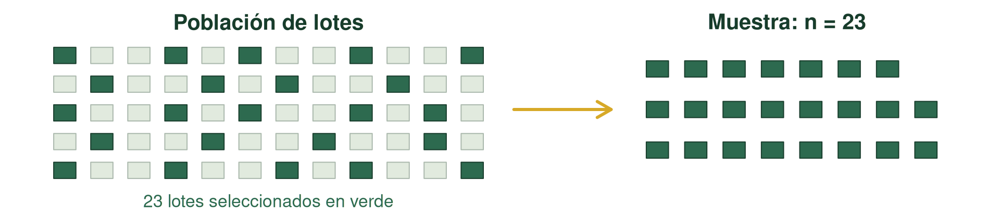
\(n=23\qquad\bar{x}=7,5\) t/ha \(\qquad s=1{,}5\) t/ha. Referencia: \(\mu_0=7{,}0\) t/ha.
\(\bar{x}-\mu_0=7,5-7{,}0=+0,5\) t/ha.
¿Alcanza para concluir que el promedio poblacional es diferente?
La diferencia sola no alcanza
Misma media, misma referencia y mismo \(n=23\); cambia la variabilidad entre lotes.
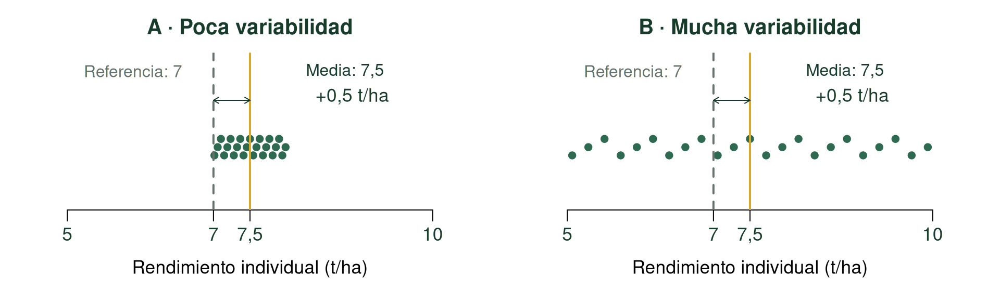
La misma diferencia de +0,5 t/ha puede ser más o menos inusual según la variabilidad esperable entre medias muestrales. También importa \(n\).
¿Se acuerdan del error estándar?
De las clases 04 y 05: estimamos cuánto varían las medias entre muestras del mismo tamaño.
\[S_{\bar{x}}=\frac{s}{\sqrt n}=\frac{1{,}5}{\sqrt{23}}\approx 0,313\text{ t/ha}\]
\(s\) describe la variación entre lotes; \(S_{\bar{x}}\) estima la variación entre medias muestrales.
¿Cuántos errores estándar nos alejamos?
\[\bar{x}-\mu_0=7,5-7{,}0=0,5\text{ t/ha}\]
\[\frac{0,50}{1{,}5/\sqrt{23}}\approx 1,599\]
El promedio observado quedó a aproximadamente 1,60 errores estándar estimados de la referencia. ¿Es inusual?
Supongamos que \(H_0\) es cierta
\[\mu=7{,}0\text{ t/ha}\]
Si tomáramos muchísimas muestras de 23 lotes, ¿qué valores de \(\bar{x}\) podríamos obtener sólo por variación muestral?
La mayoría serían cercanos a 7,0; algunos menores y otros mayores. Casi nunca exactamente 7,0.
Una distribución bajo \(H_0\)
Si \(H_0\) fuera cierta, ¿cómo variarían las medias de muestras de 23 lotes?
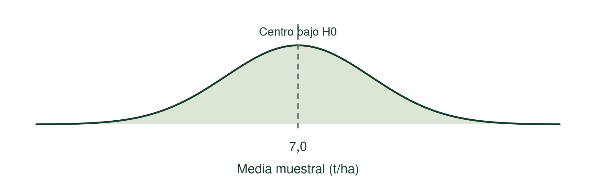
Ilustración: población Normal con \(\mu=7\) y \(\sigma=1{,}5\) t/ha. En el estudio real, \(\sigma\) es desconocida.
\(H_0\) fija el centro; los supuestos y la variabilidad completan el modelo de referencia.
Ubicamos el resultado observado en la distribución de \(H_0\)
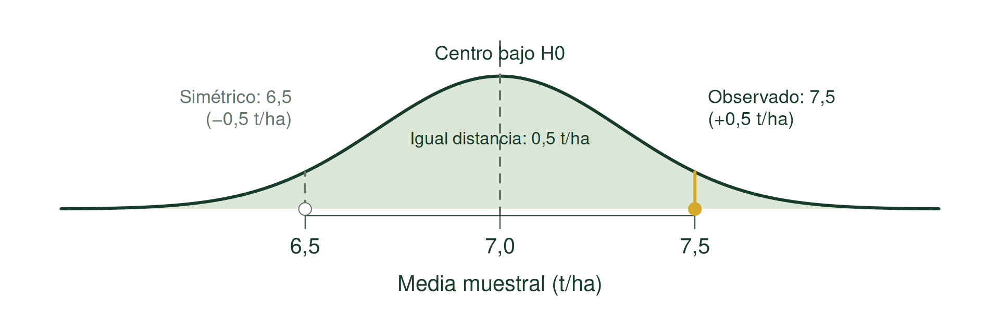
Si \(\mu\) realmente fuera 7,0 t/ha, ¿qué tan inusual sería observar una diferencia como la encontrada (+0,5 t/ha) o todavía más extrema?
El estadístico t mide esa distancia
Un estadístico de prueba cuantifica la discrepancia entre lo observado en la muestra y lo esperado bajo \(H_0\).
Bajo \(H_0\) y los supuestos de la prueba: \(T\sim t_{22}\). \(T\) varía entre muestras; \(t_{\mathrm{calc}}\) es el valor calculado con la nuestra.
En este caso, estandarizamos la diferencia con su error estándar (recién lo vimos):
\[t_{\mathrm{calc}}=\frac{\bar{x}-\mu_0}{S_{\bar{x}}}=\frac{7,5-7{,}0}{1{,}5/\sqrt{23}}\approx 1,599\qquad gl=22\]
La media muestral está a 1,60 errores estándar por encima de la referencia. Conocer la distribución de \(T\) bajo \(H_0\) permitirá evaluar cuán inusual es y calcular probabilidades asociadas.
¿Por qué comparamos con una t?
Como \(\sigma\) es desconocida, la reemplazamos por \(s\):
\[T=\frac{\bar{x}-\mu}{s/\sqrt n}\]
Con observaciones independientes de una población Normal, este estadístico sigue una t con \(n-1\) grados de libertad.
La distribución t corresponde a \(T\), no a \(\bar{x}\). Con muchos grados de libertad, t se aproxima a Normal.
Supuestos y robustez de la prueba t
SUPUESTOS / CONDICIONES
- Muestreo que represente la población definida y observaciones independientes.
- Para la distribución t exacta de una media: Normalidad poblacional.
ROBUSTEZ
La prueba puede tolerar desviaciones moderadas de Normalidad. Depende de \(n\), la asimetría y los valores extremos.
Con sólo \(n\), \(\bar{x}\) y \(s\) no verificamos estas condiciones. En este ejemplo didáctico las suponemos razonables.
¿Qué resultados consideraríamos tan extremos como el observado?
\(H_1:\mu\ne7{,}0\): interesan medias menores o mayores que 7, alejadas al menos tanto como la observada.
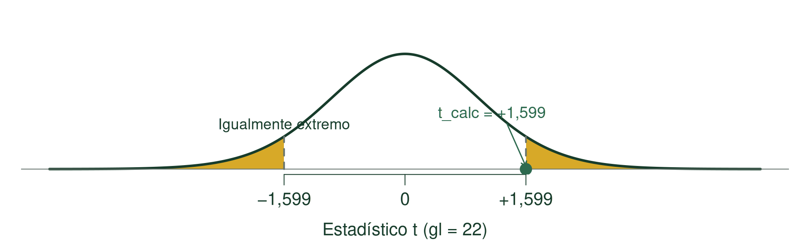
En la distribución de t, esas direcciones son las dos colas: \(T\le-1,599\) o \(T\ge 1,599\).
Esa probabilidad se llama valor-p
Queremos calcular la probabilidad, bajo \(H_0\), de obtener un estadístico tan extremo como el observado o más extremo.
Esa probabilidad se llama valor-p (p-value, en inglés). En esta prueba bilateral:
\[\text{valor-p}=P(|T|\ge |t_{\mathrm{calc}}|\mid H_0)\approx 0,1242\]
\(T\): variable aleatoria bajo \(H_0\). \(t_{\mathrm{calc}}\): valor calculado con nuestra muestra.
El valor-p supone \(H_0\) cierta; no calcula la probabilidad de \(H_0\).
Leemos el área bilateral
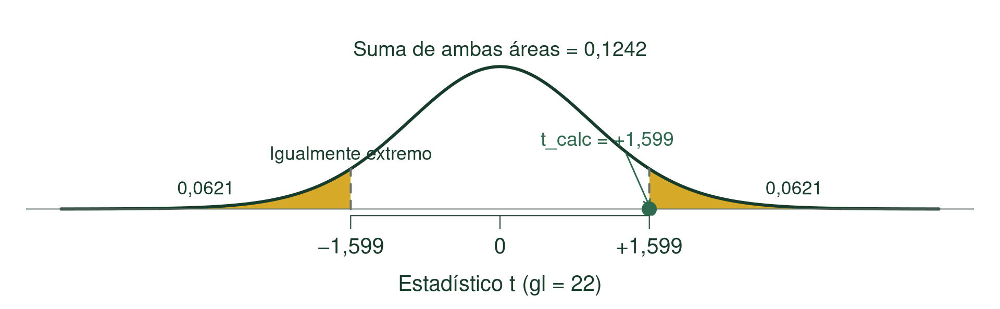
Bajo \(H_0\) y los supuestos, aproximadamente 12,4% de los estadísticos serían tan extremos o más extremos que el observado.
Un umbral de decisión: \(\alpha\)
El valor-p cuantifica cuán raro sería un resultado como el observado o más extremo, suponiendo \(H_0\) cierta.
Para decidir, necesitamos definir a partir de qué probabilidad lo consideraremos suficientemente raro.
UMBRAL: \(\alpha\), nivel de significación. Aquí: \(\alpha=0{,}05\), establecido antes de mirar los resultados.
CRITERIO DE DECISIÓN:
- Rechazamos \(H_0\) si y sólo si valor-p \(<\alpha\).
- Si valor-p \(\ge\alpha\), no rechazamos \(H_0\).
Nuestro valor-p \(\approx 0,1242\ge0{,}05\): no rechazamos \(H_0\).
\(\alpha\) también define regiones de rechazo
Bilateral: dos regiones de rechazo (o regiones críticas); \(\alpha=0{,}05\), 0,025 en cada cola.
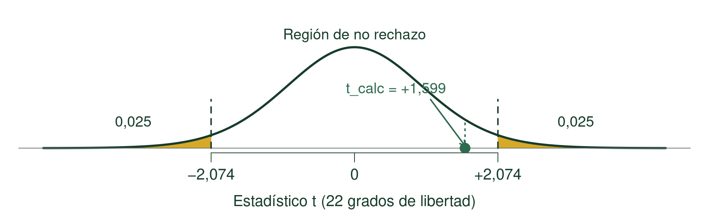
Rechazamos \(H_0\) si \(t_{\mathrm{calc}}\) cae en alguna región de rechazo: \(t_{\mathrm{calc}}<-t^*\) o \(t_{\mathrm{calc}}>+t^*\); \(t^*_{0{,}025;22}\approx 2,074\).
\(t_{\mathrm{calc}}\approx 1,599\) queda en la región de no rechazo. No es una región de aceptación: no rechazar \(H_0\) no demuestra que sea verdadera.
¿Qué podemos concluir?
Con \(\alpha=0{,}05\), los datos no aportan evidencia suficiente para concluir que el rendimiento medio de la nueva variedad, en los lotes comerciales de la zona, campaña y manejo definidos, difiera de la referencia de 7,0 t/ha.
La media muestral fue 0,5 t/ha mayor que la referencia (valor-p ≈ 0,1242). Esa diferencia debe interpretarse considerando su incertidumbre.
No rechazar \(H_0\) no demuestra \(H_0\). Volveremos al IC95% para cuantificar la incertidumbre.
No rechazar \(H_0\) no demuestra que \(H_0\) sea verdadera
Como en un juicio, no alcanzar evidencia suficiente para rechazar una hipótesis inicial no equivale a demostrar que sea verdadera.
“Ausencia de evidencia no es evidencia de ausencia.”
No rechazar \(H_0\) no demuestra igualdad ni ausencia de diferencia poblacional.
0,05 no es una frontera mágica
\[\text{valor-p}=0{,}049\]
Justo por debajo del umbral.
\[\text{valor-p}=0{,}051\]
Justo por encima del umbral.
La evidencia no cambia bruscamente al cruzar 0,05: 0,049 y 0,051 representan evidencia muy similar, aunque el criterio de decisión los ubique a lados distintos del umbral.
En nuestro ejemplo, valor-p \(\approx 0,1242\). También debemos mirar la estimación y su incertidumbre.
Volvemos al IC de la Clase 05
Para los mismos datos y el mismo modelo t:
\[t^*_{0{,}025;22}=2,074\]
\[IC95\%:\quad7,5\pm 2,074\times\frac{1{,}5}{\sqrt{23}}\]
\[[6,85;\ 8,15]\text{ t/ha}\]
Aquí \(t^*_{0{,}025;22}\) deja 0,025 de probabilidad en la cola derecha.
El valor 7,0 queda incluido
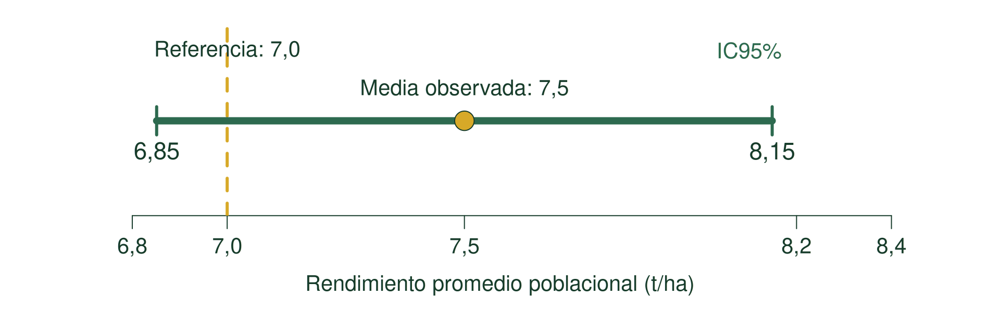
El intervalo incluye \(\mu_0=7{,}0\). Es coherente con no rechazar \(H_0\).
IC y prueba de hipótesis: dos caras de la misma moneda
Con los mismos datos, modelo y procedimiento, el IC reúne los valores de \(\mu_0\) que no rechazamos en la prueba bilateral.
SI EL IC95% NO CONTIENE \(\mu_0\)
Rechazamos \(H_0\) al nivel 0,05.
SI EL IC95% CONTIENE \(\mu_0\)
No rechazamos \(H_0\) al nivel 0,05.
En la prueba bilateral y el IC correspondientes, el nivel de confianza es \(1-\alpha\).
\(\alpha=0{,}05\quad\longleftrightarrow\quad1-\alpha=0{,}95\) (IC95%).
La prueba y el IC cuentan la misma historia
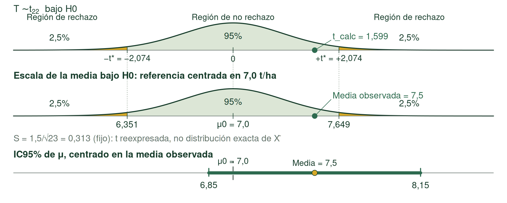
\(\mu_0\) está dentro del IC95% \(\longleftrightarrow\) \(t_{\mathrm{calc}}\) está en la región de no rechazo.
Para una prueba bilateral con \(\alpha=0{,}05\), el IC95% correspondiente y la prueba cuentan la misma historia.
¿Es importante en términos agronómicos?
Diferencia estimada respecto de 7,0: +0,5 t/ha.
\[IC95\%\text{ para }\mu:\quad[6,85;\ 8,15]\text{ t/ha}\]
El IC incluye 7: hay valores poblacionales menores y mayores que la referencia compatibles con nuestros datos.
- ¿Una mejora de 0,2 t/ha justificaría cambiar de variedad? ¿Y una de 1 t/ha?
- ¿Qué implican los costos, la estabilidad y las condiciones de manejo?
- ¿La estimación es suficientemente precisa para decidir?
Significación e importancia agronómica
ESTADÍSTICAMENTE SIGNIFICATIVO
No significa necesariamente importante agronómicamente.
NO SIGNIFICATIVO
No significa necesariamente ausencia de efecto.
Una conclusión que ayude a decidir
“\(\mu=7\) t/ha”. ¿Podemos concluir esto?
NO. Con \(\alpha=0{,}05\), para los lotes comerciales de la zona, campaña y manejo definidos, no hay evidencia suficiente de que la media de la nueva variedad difiera de 7,0 t/ha (valor-p ≈ 0,1242).
Estimamos un rendimiento medio de 7,5 t/ha, 0,5 t/ha por encima de la referencia, con IC95% de \(\mu\): [6,85; 8,15] t/ha.
El IC incluye 7: no rechazar no demuestra igualdad. Informamos la estimación y su incertidumbre.
La dirección surge de la pregunta
| Pregunta previa al análisis | Alternativa | Extremos relevantes |
|---|---|---|
| ¿Difiere? | \(H_1:\mu\ne\mu_0\) | Ambas colas |
| ¿Es mayor? | \(H_1:\mu>\mu_0\) | Cola derecha |
| ¿Es menor? | \(H_1:\mu<\mu_0\) | Cola izquierda |
Una alternativa unilateral requiere teoría o una expectativa científica definida antes de mirar los datos.
- Fertilizante: esperar mayor rendimiento, con fundamento agronómico y dosis no tóxicas.
- Germinación: tratamiento diseñado para reducir el tiempo hasta germinar.
La dirección contraria debe ser científicamente poco plausible o no responder a la pregunta. No elegimos la dirección según la media observada ni para reducir el valor-p.
¿Y si la pregunta apunta a comparar dos poblaciones?
¿Difieren los rendimientos promedio de las variedades A y B?
La pregunta puede ser la misma, pero la estructura de los datos determina cómo expresamos el parámetro y construimos su estimador.
¿Cómo obtuvimos los datos de ambas poblaciones?
Podemos tener 2 diseños adecuados y diferentes
DISEÑO AL AZAR
Muestras independientes.
Unidades distintas reciben A o B. No existe correspondencia/relación uno a uno.
DISEÑO PAREADO
Muestras relacionadas.
Cada observación de A está vinculada a una de B por el diseño.
¿Existe una correspondencia/relación real, definida por el diseño, entre una observación de A y una de B?
Unidades independientes
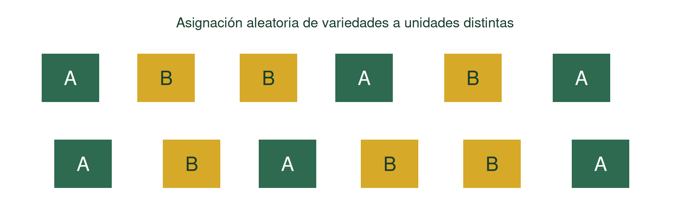
Diseño completamente aleatorizado: asignamos A o B a unidades independientes, no relacionadas. El esquema representa su ubicación, no pares.
Dos poblaciones, muestras independientes
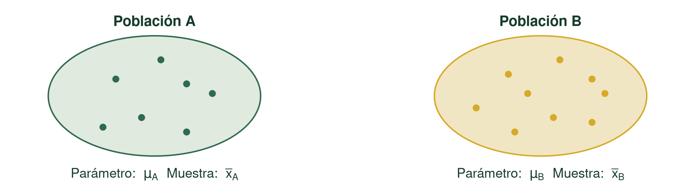
\[\Delta\mu=\mu_B-\mu_A\qquad\Delta\bar{x}=\bar{x}_B-\bar{x}_A\]
Comparamos dos medias de muestras independientes: comparamos \(\Delta\bar{x}\) con 0 considerando su error estándar.
Prueba t de Student para comparar dos medias: muestras independientes
La versión clásica de Student supone igualdad de varianzas poblacionales:
\[\sigma_A^2=\sigma_B^2\]
Homogeneidad de varianzas y homocedasticidad son términos equivalentes.
Este supuesto volverá a aparecer cuando estudiemos ANOVA. Si no podemos sostenerlo, podemos usar una t con corrección de Welch.
Prueba t con corrección de Welch
Welch permite comparar medias sin asumir homogeneidad de varianzas.
\[t_{\mathrm{calc}}=\frac{\Delta\bar{x}-0}{S_{\Delta\bar{x}}}\qquad S_{\Delta\bar{x}}=S_{\bar{x}_B-\bar{x}_A}=\sqrt{\frac{s_B^2}{n_B}+\frac{s_A^2}{n_A}}\]
Los grados de libertad se ajustan con el tamaño y la variabilidad de ambas muestras; habitualmente los calcula el software.
Usaremos Welch. No necesitamos comparar previamente las varianzas para elegirla.
Ejemplo: dos muestras independientes
Rendimiento en parcelas independientes de la zona y manejo del estudio, en t/ha:
| Variedad | \(n\) | \(\bar{x}\) | \(s\) |
|---|---|---|---|
| A | 11 | 7,0 | 0,6 |
| B | 13 | 7,8 | 0,8 |
\[\Delta\bar{x}=\bar{x}_B-\bar{x}_A=0,80\text{ t/ha}\]
\[S_{\Delta\bar{x}}=\sqrt{\frac{0{,}8^2}{13}+\frac{0{,}6^2}{11}}\approx 0,286\text{ t/ha}\qquad t_{\mathrm{calc}}=\frac{0,80-0}{S_{\Delta\bar{x}}}\approx 2,794\]
\(gl\approx 21,73\): en Welch pueden no ser enteros. Los obtiene el software; no los calcularemos a mano.
Distribución t bajo \(H_0\): Welch
\(H_0:\Delta\mu=0\); \(H_1:\Delta\mu\ne0\). Referencia t aproximada bajo \(H_0\), con \(gl\approx 21,73\).
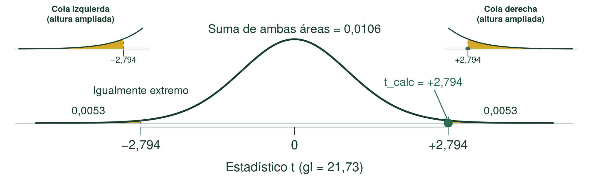
Las dos áreas reúnen resultados tan extremos o más extremos que \(|t_{\mathrm{calc}}|\approx 2,794\):
\(\text{valor-p bilateral}=P(|T|\ge |t_{\mathrm{calc}}|\mid H_0)\approx 0,0106\).
Conclusión: dos muestras independientes
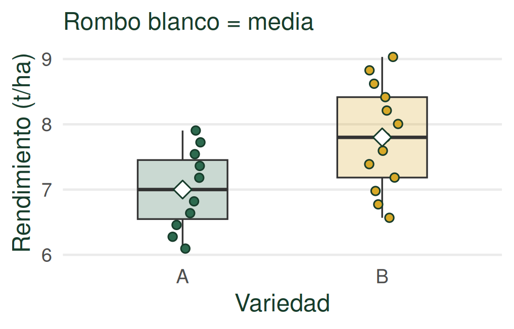
Ilustración didáctica: valores construidos que reproducen \(n\), media y \(s\); no son datos de campo.
Para las parcelas de la zona y manejo estudiados, con \(\alpha=0{,}05\) hay evidencia de que los rendimientos medios difieren (valor-p ≈ 0,0106).
Estimamos 0,80 t/ha más en B. IC95% para \(\Delta\mu\): [0,206; 1,394] t/ha.
La variedad B rindió 11,4% más que la A en la muestra. Describimos dirección y magnitud; el IC cuantifica la incertidumbre de la diferencia absoluta.
Welch también necesita un diseño válido
- Independencia entre unidades y entre muestras.
- Para muestras pequeñas, distribuciones aproximadamente Normales, sin valores extremos dominantes.
- Revisar datos y diseño: Welch no corrige dependencia ni sesgos de muestreo.
Dos parcelas relacionadas dentro de cada sector
En 11 sectores del lote, identificamos dos parcelas próximas, con suelo y manejo similares dentro del sector. Asignamos al azar A a una y B a la otra.
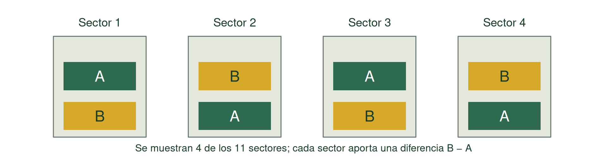
Dentro del sector, las parcelas comparten condiciones. Entre sectores pueden cambiar fertilidad, humedad y suelo; los sectores son independientes.
Dos poblaciones, datos relacionados
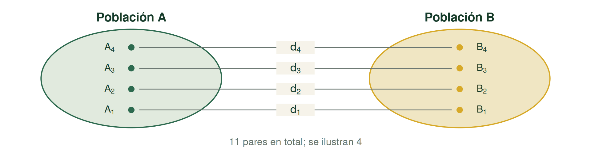
Nueva variable: diferencia dentro de cada par, \(d_i=B_i-A_i\).
Parámetro: \(\mu_d\). Estimador: \(\bar{d}\).
Analizamos una sola variable: las diferencias. Esto convierte el problema en una prueba para UNA media poblacional, como al comienzo.
Analizamos diferencias dentro de cada par
\(d_i=B_i-A_i\). Parámetro: \(\mu_d\); estimador: \(\bar{d}\).
\[H_0:\mu_d=0\qquad H_1:\mu_d\ne0\]
¿Qué información nos da el signo de \(d_i\)?
\(d_i>0\): B rindió más que A dentro de ese par.
\(d_i<0\): B rindió menos que A dentro de ese par.
Ejemplo: 11 pares de parcelas
\[n=11\text{ pares}\qquad \bar{d}=0{,}50\text{ t/ha}\qquad s_d=0{,}40\text{ t/ha}\]
\[S_{\bar{d}}=\frac{0{,}40}{\sqrt{11}}=0,121\text{ t/ha}\]
\[t_{\mathrm{calc}}=\frac{0{,}50}{S_{\bar{d}}}=4,146\qquad gl=10\]
El tamaño muestral relevante es 11 diferencias, no 22 observaciones independientes.
Distribución t bajo \(H_0\): pareada
\(H_0:\mu_d=0\). Distribución t con \(gl=10\) para las 11 diferencias.
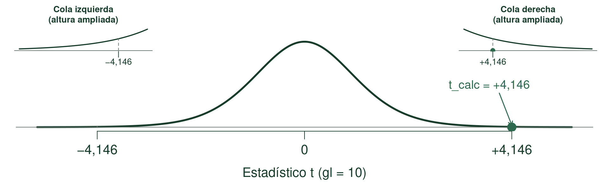
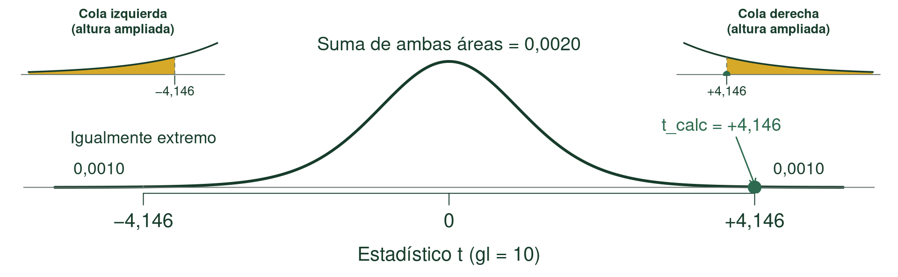
\(\text{valor-p}=P(|T|\ge|t_{\mathrm{calc}}|\mid H_0)\approx 0,0020\). Es la misma lógica de una media poblacional; lo nuevo fue construir \(d\) a partir de pares relacionados.
Resultado de la comparación pareada
Para las parcelas en sectores con las condiciones de suelo y manejo representadas por el estudio, con \(\alpha=0{,}05\) hay evidencia de que A y B difieren en rendimiento medio (valor-p ≈ 0,0020).
Estimamos 0,50 t/ha más en B que en A:
\[IC95\%\text{ de }\mu_d:\quad[0,231;\ 0,769]\text{ t/ha}\]
El intervalo es positivo: el 0 no está incluido en el IC; respalda una media mayor para B y cuantifica la incertidumbre de la diferencia.
Supuestos: sectores independientes y diferencias aproximadamente Normales, sin valores extremos dominantes. La normalidad relevante es la de las diferencias.
¿Por qué parear puede mejorar la precisión?
ENTRE SECTORES
Pueden cambiar el suelo, la humedad o la fertilidad.
DENTRO DEL SECTOR
Al calcular \(B_i-A_i\), parte de esa heterogeneidad común se cancela.
Si las unidades del par responden de manera similar, disminuye la variabilidad de las diferencias. Puede mejorar la precisión.
El pareamiento viene del diseño
No elegimos una prueba pareada simplemente porque parezca más precisa.
El pareamiento debe surgir de cómo se obtuvieron los datos y de una relación real entre las unidades. No se inventa después de observar los resultados.
Tener igual cantidad de observaciones de A y B no alcanza para que estén pareadas.
Misma pregunta, distinto diseño
¿A y B difieren en rendimiento promedio?
UNIDADES SIN RELACIÓN
Prueba t para dos medias independientes
Usaremos la corrección de Welch.
UNIDADES RELACIONADAS EN PARES
Prueba t para datos pareados
Una media de diferencias.
La prueba depende de la pregunta y de cómo fueron generados los datos.
Una proporción: la misma lógica
En este ejemplo, con el tratamiento de referencia históricamente germina el 80% de las semillas: \(\pi_0=0{,}80\) es una referencia previa.
Pregunta: ¿El nuevo tratamiento de escarificación produce una proporción diferente?
\[H_0:\pi=0{,}80\qquad H_1:\pi\ne0{,}80\]
Observamos la proporción muestral \(p\). Bajo \(H_0\), suponemos \(\pi=\pi_0\): para saber qué resultados serían esperables, calculamos la variabilidad con ese valor de referencia, no con \(p\).
\[\sigma_{p,H_0}=\sqrt{\frac{\pi_0(1-\pi_0)}{n}}\]
Suponiendo \(H_0\) cierta, ¿qué tan inusual sería el resultado observado?
Un mapa para organizar preguntas
| Pregunta | Parámetro y referencia | Estructura y procedimiento |
|---|---|---|
| Una media | \(\mu\); \(\mu_0\): valor de referencia | t para una media |
| Una proporción | \(\pi\); \(\pi_0\): valor de referencia | Prueba para una proporción |
| Dos medias | \(\Delta\mu=\mu_B-\mu_A\); en pares: \(\mu_d\) | Independientes: t con Welch; relacionadas: t pareada |
| Dos proporciones | \(\Delta\pi=\pi_B-\pi_A\) | Procedimiento según sean muestras independientes o relacionadas |
Primero pregunta → parámetro → estructura de los datos.
¿Qué puede salir mal al decidir?
Podemos rechazar \(H_0\) cuando era cierta.
Podemos no rechazar \(H_0\) cuando era falsa.
Estas posibilidades nos llevan a los errores tipo I y II y a la potencia estadística. Será el núcleo de la próxima clase.
Procedimiento de una prueba de hipótesis
- Plantear \(H_0\) y \(H_1\) según la pregunta de investigación.
- Fijar el nivel de significación \(\alpha\).
- Definir el estadístico y su distribución suponiendo \(H_0\) verdadera.
- Establecer el criterio de decisión: valor-p o \(t_{\mathrm{calc}}\) y los valores críticos correspondientes.
- Realizar los cálculos necesarios.
- Decidir sobre \(H_0\): rechazar o no rechazar.
- Concluir según la pregunta: comunicar población, dirección, magnitud e incertidumbre, cuando corresponda.
Lo esencial de hoy
- Una prueba de hipótesis evalúa qué tan compatibles son los datos con una hipótesis sobre la población.
- El estadístico de prueba mide la discrepancia entre lo hipotetizado y lo observado en nuestro estudio.
- El valor-p cuantifica cuán inusual sería una discrepancia como la observada, o más extrema, si \(H_0\) fuera cierta.
- No rechazar \(H_0\) no demuestra que sea verdadera.
- Una conclusión útil informa población, significación/confianza, dirección y magnitud de la diferencia y su incertidumbre.
- Para comparar dos medias, cómo se obtuvieron los datos determina si las muestras son independientes o relacionadas.
Próxima clase
Errores · Potencia · Tamaño de muestra
¿Qué determina nuestra capacidad para detectar un efecto relevante?
Errores tipo I y II, potencia estadística y planificación del tamaño muestral.

Andrés Tálamo - Estadística y Diseño Experimental - UNSa